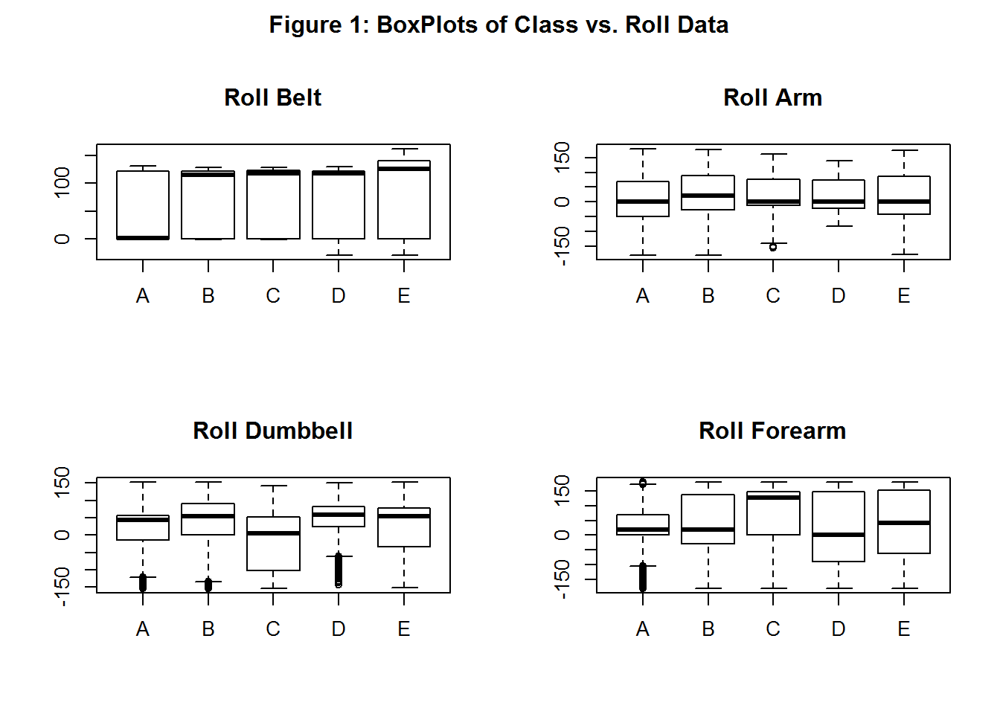
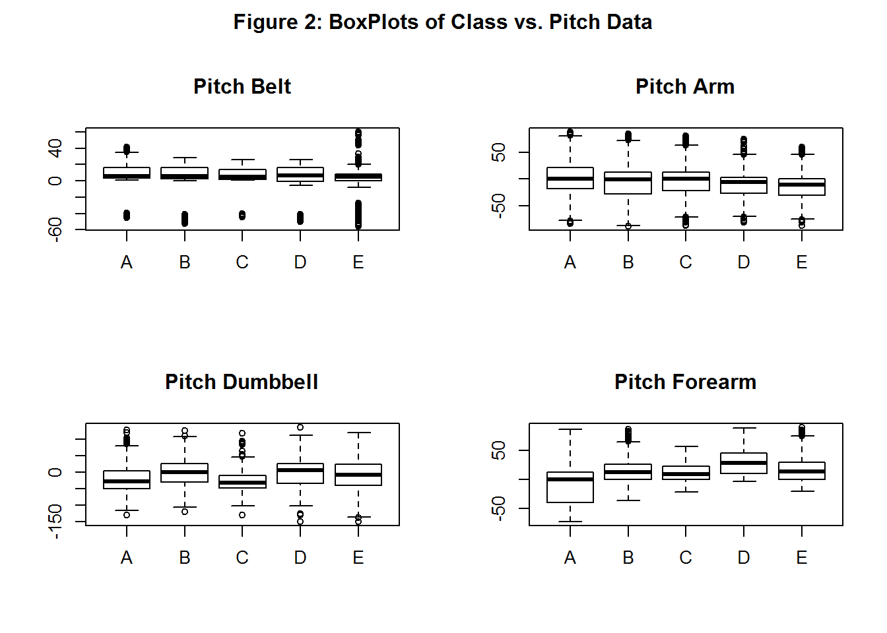
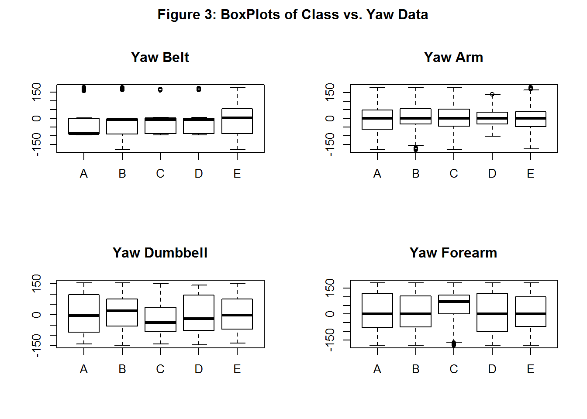
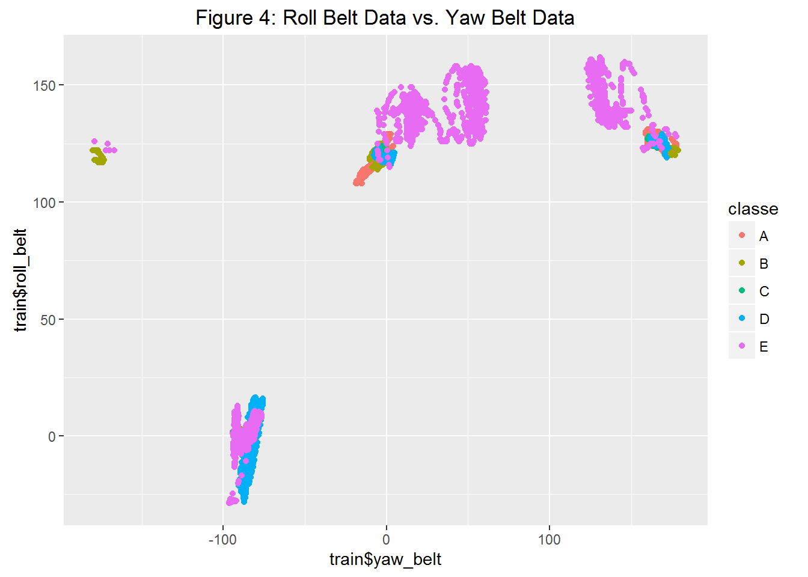

Joseph Stein - 3/6/2016
In this study, six young health participants were asked to perform one set of 10 repetitions of the Unilateral Dumbbell Biceps Curl in five different ways: class A is the correct way, while classes B-E are incorrect ways. The goal is to predict which class the subject falls into based on various accelerometer data collected by wearable devices. Because this is a categorical problem, I chose to apply a Random Forest machine learning algorithm with 3-fold cross-validation to predict the manner in which subjects performed the weight-lifting exercise. The model uses 53 unique covariates that are both non-sparse in nature and which show sufficient variance to be meaningful.
Based on the confusion matrix results when applying the model to a validation set, the algorithm does a good job at predicting class based on a validation dataset with an accuracy of >90%.
Once the data was loaded into R, initial data exploration was performed. Specific covariates were then chosen for the model, based on various techniques.
library(caret)## Warning: package 'caret' was built under R version 3.1.3## Loading required package: lattice## Warning: package 'lattice' was built under R version 3.1.3## Loading required package: ggplot2## Warning: package 'ggplot2' was built under R version 3.1.3library(ggplot2)
insample <- read.csv('C:/Users/Joseph/Desktop/MOOC/coursera/data_science/c8_machine_learning/project/pml-training.csv')The distribution of classes within the raw dataset appears to be reasonably equal, although class A (the correct way to perform the exercise) has the most observations
table(insample$classe)##
## A B C D E
## 5580 3797 3422 3216 3607To begin the process of covariate selection, I first removed columns from the data frame that are not relevant to model construction. These include sequential observation counts as well as various timestamps taken from the wearable devices. I then isolated and removed near-zero variance predictors from the data frame.
Initial dimensions of the data:
## [1] 19622 160After summarizing the processed data, it appeared that several predictor candidates contained sparse data. To keep the model simple, I decided to remove all predictors where the % of NA exceeded 95%. This further reduced the dimensionality of the data, and brought down the total number of predictors to 53.
sumna<-numeric(0)
for (i in 1:ncol(insample)) {
sumna[i]<-sum(is.na(insample[,i])==TRUE)/nrow(insample)
}
insample<-insample[,sumna<0.95]Final dimensions of the data:
## [1] 19622 53The approach I chose was to use Random Forest with 3-fold cross validation. The pros of Random Forest for classification prediction is accuracy and the fact that it can handle non-linear associations. However, the cons of Random Forest include reduced speed, reduced interpretability, as well as the potential for overfitting. While a relatively small number of folds were used for cross-validation (in this case, K=3), the overall performance variance was less – although at the expense of increased bias.
Before fitting a model, I partitioned the insample dataset into both a training dataset and a validation dataset. I chose to do this to 1) reduce the time required to build a model and 2) to get a sense of the accuracy of the model prior to applying it to a test set.
inbuild <- createDataPartition(y=insample$classe,p=0.7,list=FALSE)
train <- insample[inbuild,]
validate <- insample[-inbuild,]
modFit <-train(classe~.,data=train,method="rf",trControl=trainControl(method="cv",number=3))## Loading required package: randomForest## Warning: package 'randomForest' was built under R version 3.1.3## randomForest 4.6-12
## Type rfNews() to see new features/changes/bug fixes.
##
## Attaching package: 'randomForest'
##
## The following object is masked from 'package:ggplot2':
##
## marginmodFit## Random Forest
##
## 13737 samples
## 52 predictor
## 5 classes: 'A', 'B', 'C', 'D', 'E'
##
## No pre-processing
## Resampling: Cross-Validated (3 fold)
## Summary of sample sizes: 9157, 9158, 9159
## Resampling results across tuning parameters:
##
## mtry Accuracy Kappa Accuracy SD Kappa SD
## 2 0.9894444 0.9866465 0.0009114991 0.001154204
## 27 0.9873333 0.9839764 0.0021855063 0.002765403
## 52 0.9810000 0.9759665 0.0017915477 0.002268708
##
## Accuracy was used to select the optimal model using the largest value.
## The final value used for the model was mtry = 2.Once calculated, the final Random Forest model was then applied to the validation set. Based on the resulting confusion matrix, accuracy is roughly 99%. Based on this, we can assume that a similar accuracy can be attained when applied to the test set.
pred<-predict(modFit,validate)
confusionMatrix(pred,validate$classe)## Confusion Matrix and Statistics
##
## Reference
## Prediction A B C D E
## A 1671 11 0 0 0
## B 2 1127 6 0 0
## C 0 1 1020 15 0
## D 0 0 0 948 0
## E 1 0 0 1 1082
##
## Overall Statistics
##
## Accuracy : 0.9937
## 95% CI : (0.9913, 0.9956)
## No Information Rate : 0.2845
## P-Value [Acc > NIR] : < 2.2e-16
##
## Kappa : 0.992
## Mcnemar's Test P-Value : NA
##
## Statistics by Class:
##
## Class: A Class: B Class: C Class: D Class: E
## Sensitivity 0.9982 0.9895 0.9942 0.9834 1.0000
## Specificity 0.9974 0.9983 0.9967 1.0000 0.9996
## Pos Pred Value 0.9935 0.9930 0.9846 1.0000 0.9982
## Neg Pred Value 0.9993 0.9975 0.9988 0.9968 1.0000
## Prevalence 0.2845 0.1935 0.1743 0.1638 0.1839
## Detection Rate 0.2839 0.1915 0.1733 0.1611 0.1839
## Detection Prevalence 0.2858 0.1929 0.1760 0.1611 0.1842
## Balanced Accuracy 0.9978 0.9939 0.9954 0.9917 0.9998While this accuracy is quite high (and Random Forest is known to provide relatively high accuracy), this result is slightly concerning as the model may be overfitted. Based on cursory evidence, it appears that certain predictors in the model may be less important than others. For example, roll_belt appears to be quite important for isolating class A while roll_arm, roll_dumbbell, and roll_forearm appear less important. Similar results are found for yaw data. In other words, additional analysis may be needed to extract the most meaningful predictors and therefore reduce the potential for overfitting.
par(mfrow=c(2,2))
par(oma=c(0,0,2,0))
plot(train$classe,train$roll_belt, main="Roll Belt")
plot(train$classe,train$roll_arm, main="Roll Arm")
plot(train$classe,train$roll_dumbbell, main="Roll Dumbbell")
plot(train$classe,train$roll_forearm, main="Roll Forearm")
title("Figure 1: BoxPlots of Class vs. Roll Data", outer=TRUE)
par(mfrow=c(2,2))
par(oma=c(0,0,2,0))
plot(train$classe,train$pitch_belt, main="Pitch Belt")
plot(train$classe,train$pitch_arm, main="Pitch Arm")
plot(train$classe,train$pitch_dumbbell, main="Pitch Dumbbell")
plot(train$classe,train$pitch_forearm, main="Pitch Forearm")
title("Figure 2: BoxPlots of Class vs. Pitch Data", outer=TRUE)
par(mfrow=c(2,2))
par(oma=c(0,0,2,0))
plot(train$classe,train$yaw_belt, main="Yaw Belt")
plot(train$classe,train$yaw_arm, main="Yaw Arm")
plot(train$classe,train$yaw_dumbbell, main="Yaw Dumbbell")
plot(train$classe,train$yaw_forearm, main="Yaw Forearm")
title("Figure 3: BoxPlots of Class vs. Yaw Data", outer=TRUE)
The following plot depicts the relative importance of roll_belt and yaw_belt as predictors, as class A is generally clustered in two separate areas.
qplot(train$yaw_belt,train$roll_belt,col=classe,data=train,main="Figure 4: Roll Belt Data vs. Yaw Belt Data")
In this study, six young health participants were asked to perform one set of 10 repetitions of the Unilateral Dumbbell Biceps Curl in five different ways: class A is the correct way, while classes B-E are incorrect ways. The goal is to predict which class the subject falls into based on various accelerometer data collected by wearable devices. I applied a simple Random Forest model with 3-fold cross-validation to a training dataset to predict a class outcome. Given the high accuracy of the model in predicting the manner in which subjects performed the weight-lifting exercise (99%), it is not necessary to combine other models to improve accuracy (ensembling). However, the high accuracy may mean that the model is overfitted which may negatively impact out-of-sample performance. Additional analysis may be required to make the model more parsimonious which may ultimately improve out-of-sample performance.